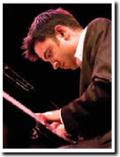

 Born in 1971 and raised in Rochester, New York, Vijay Iyer is the son of South Indian immigrants to the US. He received 15 years of Western classical training on violin beginning at the age of 3. He began playing the piano by ear in his childhood, and is mostly self-taught on that instrument. Vijay was also exposed to some Indian classical and religious music in his youth. His high school years saw a growing interest in jazz. After completing an undergraduate degree in mathematics and physics at Yale when he was 20, Iyer then went to the University of California, Berkeley to do a Ph.D. in physics. Vijay continued to pursue his jazz interests and served as the house pianist in jam sessions at the Bird Kage, a famous club in North Oakland, which featured some of the best local musicians such as Ed Kelly and Smily Winters, as well as guest luminaries such as Pharoah Sanders. This greatly enriched his understanding of the jazz idiom and the lived jazz experience. In an interview with A Shuman (April, 1997), Iyer states "I found that the music we were playing was a profound expression of their lives, and the lives of the audience members as well."
Vijay IyerNow a New York based jazz pianist, composer, and producer, he performs around the world with his various ensembles and collaborations, including his trio, quartet, and quintet; his large-scale works with poet-performer Mike Ladd; the experimental collective Fieldwork; the new South Asian chamber trio Tirtha; and Raw Materials, his longstanding duo with saxophonist Rudresh Mahanthappa. In 2003, he collaborated with Mike Ladd, hip-hop MC and producer on "In What Language?", a song cycle about the post-9/11 world. His orchestral work Interventions was commissioned and premiered in 2007 by the American Composers Orchestra conducted by Dennis Russell Davies, and his oratorio with Ladd, Still Life with Commentator, was commissioned by Brooklyn Academy of Music for its 2006 Next Wave Festival.
Iyer received the 2003 Alpert Award in the Arts, a 2006 Fellowship from New York Foundation for the Arts, and grants from the Rockefeller Foundation, the New York State Council on the Arts, Creative Capital, the Cary Charitable Trust, American Composers Forum, Chamber Music America, and Meet The Composer. He has worked with Amiri Baraka, Steve Coleman, Roscoe Mitchell, Wadada Leo Smith, dead prez, Amina Claudine Myers, Butch Morris, George E. Lewis, Miya Masaoka, Trichy Sankaran, Pamela Z, Burnt Sugar, Karsh Kale, Tyshawn Sorey, Oliver Lake, DJ Spooky, Ethel, Imani Winds, Bill Morrison, and many others. Iyer holds a B.S. in Mathematics and Physics from Yale College, and a Masters in Physics and an interdisciplinary Ph.D. in Technology and the Arts from the University of California, Berkeley.
He is a faculty member at New York University, The New School, and the School for Improvisational Music. His scholarly writings appear in Music Perception, Current Musicology, Journal of Consciousness Studies, Critical Studies in Improvisation, Journal of the Society for American Music, and the anthologies Uptown Conversation: The New Jazz Studies, Sound Unbound: Sampling Digital Music and Culture, and Arcana IV. He is a Steinway artist.
Iver was also a judge for the 9th and 10th annual Independent Music Awards to support independent artists' careers.